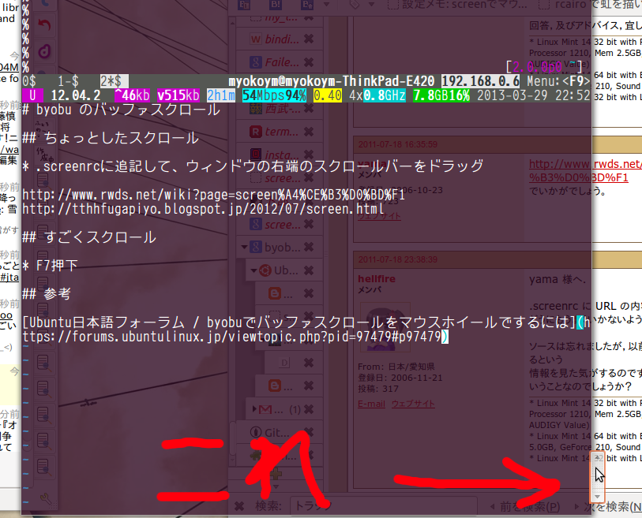

2013-03-29
byobuでターミナル画面の履歴をスクロールする方法
スクロール方法は２種類あり、操作や戻れる行数などが異なります。
A. ちょっとしたスクロール
マウスで行う普通のスクロールです。
- 戻れる行数はそれほど多くない（数百行程度）
- ウィンドウを切り替えると、履歴が消えて戻れなくなる
やりかた
-
.screenrcに下の設定を追加
termcapinfo xterm ti@:te@
byobuを再起動
ウィンドウの右端に出てくるスクロールバーをドラッグ

B. 気合を入れてスクロール
まじめにスタックトレースを読むときに使うスクロールです。
- byobuのデフォルトのスクロール方法
- 10,000行まで戻れる
- ウィンドウを切り替えても残る
やりかた
- F7キーを押下
- F7キーを押すとスクロールモードが開始される
- viキーバインドで移動
- カーソル移動は、moreやless、viなどと似たキーバインド
- スペース -> 選択 -> スペースで、byobuのバッファにコピー
- エスケープキー -> ] で貼り付け
2013-09-10追記: コピーは環境によって違う？スペース -> 選択 -> エンター の環境を確認。